Ajout d'un utilisateur
Rendez vous dans la gestion utilisateur :

Rendez vous dans le formulaire de création d'un utilisateur
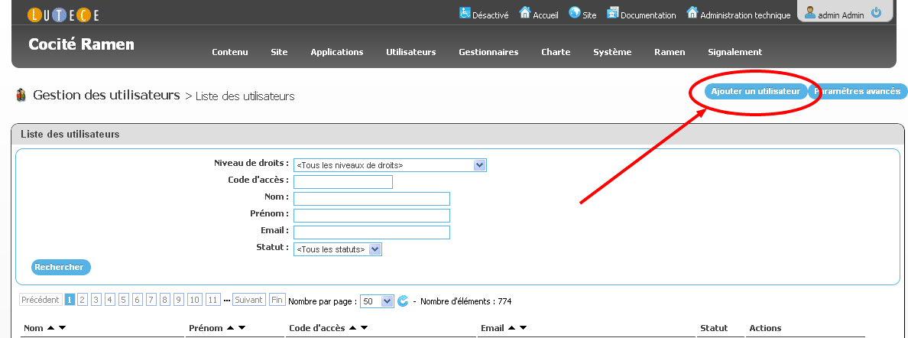
Créez l'utilisateur, il sera alors notifié.
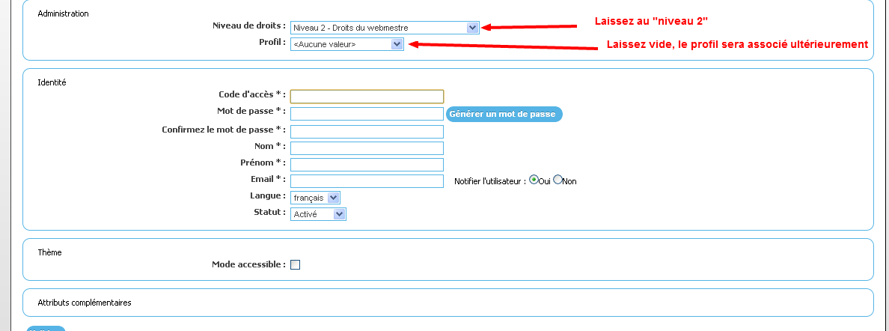
L'utilisateur a ainsi été crée et notifié par email. Il n'a aucun droit à ce stade. Il faut lui associé un profil.
Retour au menu.
Associez un utilisateur à un profil et une entité
Il est très important de comprendre que les "profils" ne sont que des moyens d'attribuer automatiquement des droits et des rôles aux utilisateurs.
Un profil n'existe pas en temps que tel, seuls les droits et les rôles existent.
Un droit donne accès à une partie de l'application. Exemple : la partie DansMaRue, la partie Ramen, la partie "feuille de route".
Un rôle donne accès à une fonctionnalité. Exemple : la permission d'ajouter une anomalie dans DansMaRue, la permission d'ajouter un commentaire sur uneanomaliee.
Un certain nombre de "profils" a donc été créé pour facilité la gestion des droits et des rôles.
Rendez vous dans la page d'administration des entités :
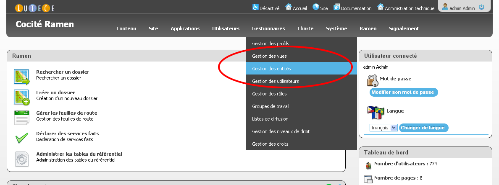
Choisir le niveau dans l'arborescence de entités sur lequel vous souhaitez associer l'utilisateur précédement créé :

Sur une entité donnée, vous pouvez lister et rechercher les utilisateurs associés.

Associez un utilisateur à une entité et un profil.
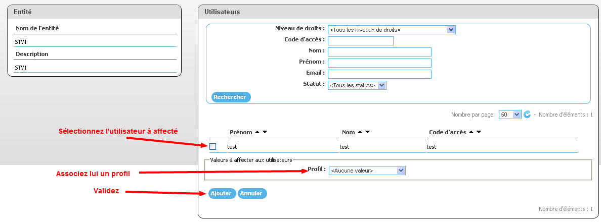
Le compte de l'utilisateur est maintenant configuré correctement.
Retour au menu.
Administration de la nomenclature DansMaRue
La nomenclature est utilisée à plusieurs endroits dans l'application :
Pour administrer ce référentiel, rendez vous dans l'onglet de "gestion du référentiel" :
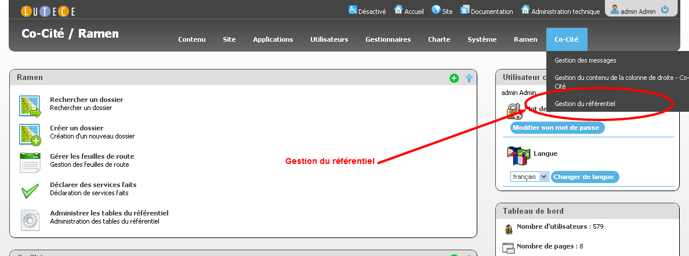
Rendez vous dans la gestion du référentiel.
 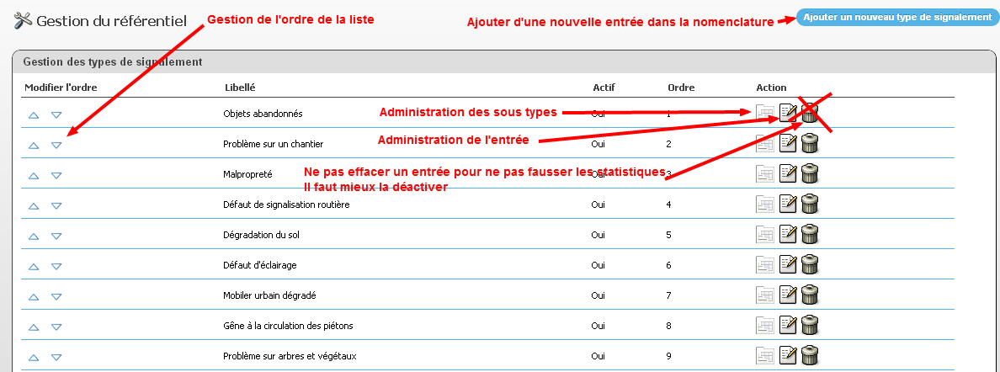 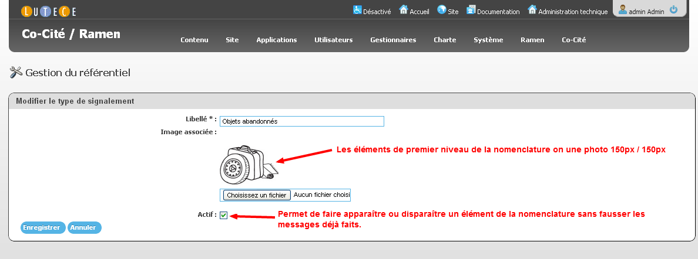
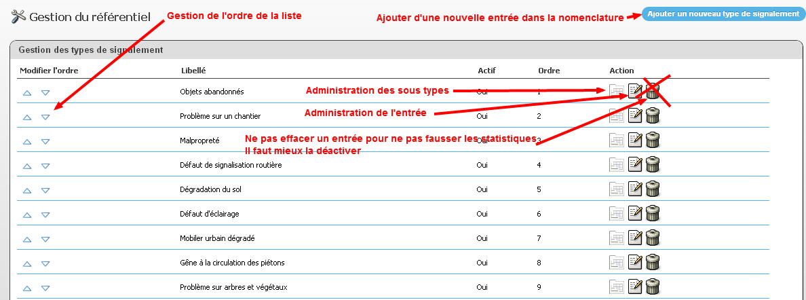 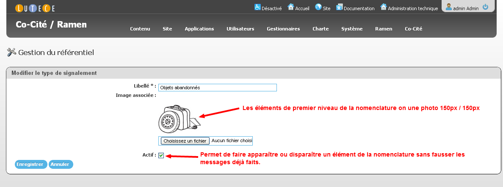
Retour au menu.
Transférer un anomalie DansMaRue à un prestataire.
Créez autant de secteurs que de prestataires externes. Ce secteur peut couvrir l'ensemble du territoire parisien. Ils peuvent être nommés indifféremment (par ex prestaire 1, prestataire 2 etc...). Voir créer un secteur
Créez une entité au niveau racine :

Dans l'administration de la nomenclature, associé une entrée de la nomenclature à la unit créée

Dans une tache de workflow, configurez l'envoyer les messages de l'entité créée à une liste d'email.
Retour au menu.
Créer un secteur
TODO Alexis
procédure d'import des sectors
Téléchargez qgis
Retour au menu.
Visualisez les secteurs.
Il est possible de visualiser les secteurs géographiques sur une carte. Ce chapitre détaille comment faire.
Téléchargez et installez google earth.
Téléchargez le fichier KML permettant de visualiser les secteurs. L'ouvrir avec google earth en double cliquant sur le fichier.
Dé-selectionnez l'ensemble des secteurs :
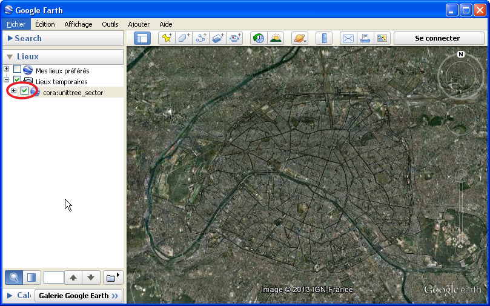
Utilisez le champs de recherche pour rechercher un secteur par son numéro. Double cliquez sur le secteur pour zoomer dessus.
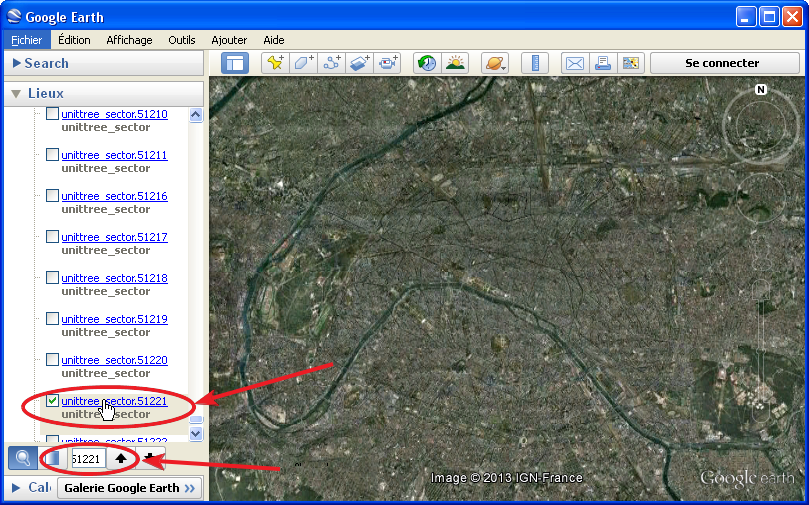
Parfois, les traits peuvent être peu visibles. Vous pouvez agrandir l'épaisseur du trait en faisant un clique droit sur le secteur puis "propriété". Vous obtenez alors l'écran suivant qui permet de modifier l'épaisseur du trait :
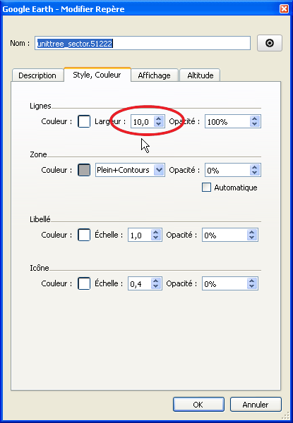
Le secteur apparait alors plus nettement :

Retour au menu.